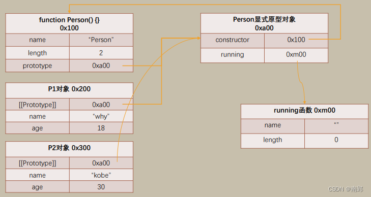
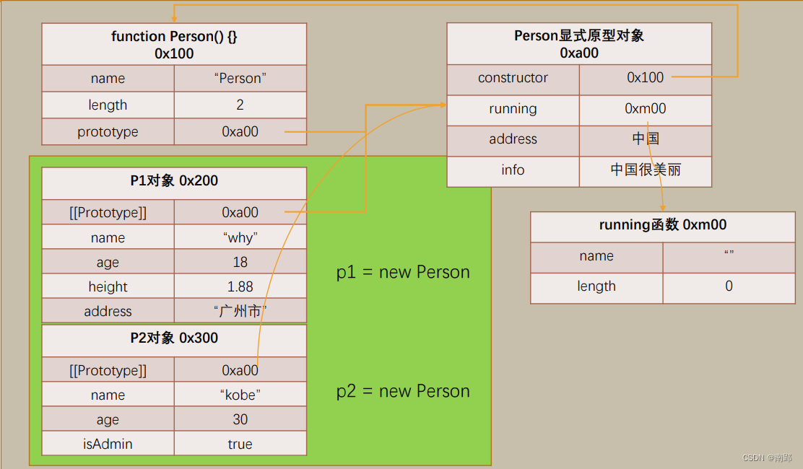
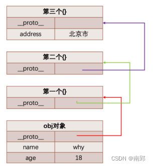
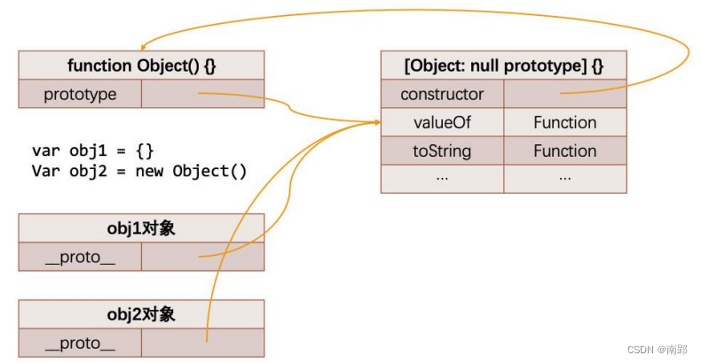
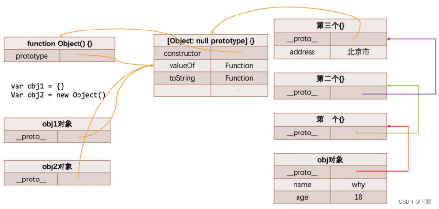
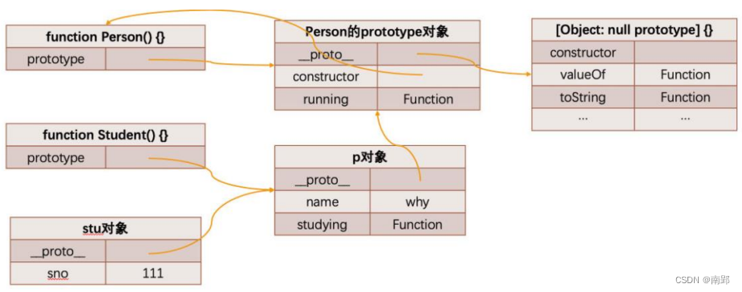
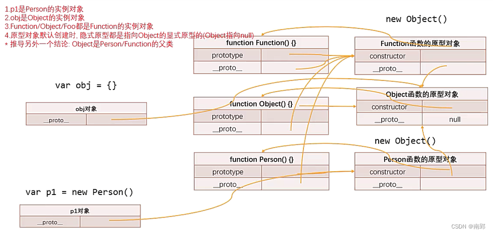

一、函数增强
1. 函数对象的属性和 arguments
JavaScript中函数也是一个对象，那么对象中就可以有属性和方法：
name：一个函数的名字我们可以通过name来访问length：属性length用于返回函数参数的个数- 注意：rest参数是不参与参数的个数的
1.1 arguments 转数组
arguments 是一个对应于传递给函数的参数的类数组(array-like)对象
array-like意味着它不是一个数组类型，而是一个对象类型：
- 但是它却拥有数组的一些特性，比如说length，比如可以通过index索引来访问；
- 但是它却没有数组的一些方法，比如filter、map等；
在开发中，我们经常需要将arguments转成Array，以便使用数组的一些特性。
// 2.1 普通方式
var newArguments = []
for (var arg of arguments) {
newArguments.push(arg)
}
console.log(newArguments);
// 2.2 ES6方式
var newArgs1 = Array.from(arguments)
console.log(newArgs1);
var newArgs2 = [...arguments]
console.log(newArgs2);
// 2.3 slice方法
var newArgs3 = [].slice.apply(arguments)
console.log(newArgs3);
var names = ['abd', 'bca', 'nba']
var newNames = names.slice() //this指向names，slice使用for遍历内部，截取数
console.log(newNames);// 原数组
}==PS：==
- 箭头函数不绑定arguments
1.2 剩余 rest 参数
剩余参数必须放到最后一个位置，否则会报错
function foo(num1, num2, ...args) {
console.log(num1, num2)
comsole.log(args)
}
function bar(...args) {}和arguments的区别：
- 剩余参数只包含那些没有对应形参的实参，而 arguments 对象包含了传给函数的所有实参；
- arguments对象不是一个真正的数组，而rest参数是一个真正的数组，可以进行数组的所有操作（ES6新增）
2. 纯函数
2.1 纯函数的概念
- 确定的输入，一定会产生确定的输出；
- 函数在执行过程中，不能产生副作用
- 副作用：在执行一个函数时，除了返回函数值之外，还对调用函数产生了附加的影响， 比如修改了全局变量，修改参数或者改变外部的存储
举例：
slice：slice截取数组时不会对原数组进行任何操作，而是生成一个新的数组；（纯函数）splice：splice截取数组, 会返回一个新的数组，也会对原数组进行修改
2.2 作用和优势
- 在写的时候，保证了函数的纯度，只是单纯实现自己的业务逻辑即可，不需要关心传入的内容是如何获得的或者依赖其他的外部变量是否已经发生了修改；
- 在用的时候，你确定你的输入内容不会被任意篡改，并且自己确定的输入，一定会有确定的输出
3. 柯里化
3.1 柯里化的概念
把接收多个参数的函数，变成接受一个单一参数（最初函数的第一个参数）的函数，并且返回一个函数去处理剩余的参数
==柯里化的优势:==
函数的职责单一
function foo(x) { x = x + 2 return function (y) { y = y * 2 return function (z) { z = z ** 2 return x + y + z } } } foo(10)(20)(30)函数的参数复用
creatAdder函数要求我们传入一个count
在之后使用返回的函数时，我们不需要再继续传入countfunction creatAdder(count) { return function(num) { return count + num } } var adder5 = creatAdder(5) adder5(100) adder5(55) var adder8 = creatAdder(8) adder8(22) adder8(35)
3.2 自动柯里化函数
function foo(x, y, z) {
return x + y + z
}
function hyCurrying(fn) {
function curryFn(...args) {
//两类操作
//1.继续返回新的函数，继续接受参数
//2.直接执行fn
if (args.length >= fn.length) {
return fn(...args)//展开args,由数组展为单个数字
// return 需要将fn执行后的结果返回出去
} else {
return function (...newArgs) {
return curryFn(... args.concat(newArgs))
}
}
}
return curryFn
}
var fooCurry = hyCurrying(foo)// fooCurry相当于curryFn
var result = fooCurry(10)(20)(30)
console.log(result);4. 组合函数
将多个函数组合起来，自动依次调用
function double(num) {
return num * 2
}
function pow(num) {
return num ** 2
}
function compFn(...fns) {
//1.边界场景
var length = fns.length
for (var i = 0; i < length; i++) {
if (typeof fns[i] !== 'function') {
throw new Error('index position ${i} must be function')
}
}
return function (...args) {
var result = fns[0].apply(this, args)
for (var i = 1; i < length; i++) {
result = fns[i].apply(this, [result])// 依次执行多个函数
}
return result
}
}
var newFn = compFn(double, pow, console.log)
newFn(100)5. 额外知识
5.1 with 语句
with语句 扩展一个语句的作用域链
var obj = {
name: 'why',
age: 18
}
with(obj) {
console.log(name)
console.log(age)
}不建议使用with语句，因为它可能是混淆错误和兼容性问题的根源
5.2 eval 函数
内建函数 eval 允许执行一个代码字符串
- eval是一个特殊的函数，它可以将传入的字符串当做JavaScript代码来运行；
- eval会将最后一句执行语句的结果，作为返回值
不建议在开发中使用eval
5.3 严格模式
严格模式对正常的JavaScript语义进行了一些限制：
- 严格模式通过 抛出错误 来消除一些原有的 静默（silent）错误；
- 严格模式让JS引擎在执行代码时可以进行更多的优化（不需要对一些特殊的语法进行处理）；
- 严格模式禁用了在ECMAScript未来版本中可能会定义的一些语法；
开启严格模式
"use strict"
- 支持在js文件中开启严格模式
- 支持对某一个函数开启严格模式
严格模式的限制
"use strict"
//1.无法意外的创建全局变量
function foo() {
message = "Hello World"
}
foo()
console.log(message)
//2.发现静默错误
//3.试图删除不可删除的属性会报错
var obj = {
name: "why"
}
Object.defineProperty(obj, "name", {
writable: false,// 不可写
configurable: false
})
obj.name = "kobe"
delete obj.name
//3.函数参数名称不能相同
function foo(num, num) {}
// 4.不允许0的八进制语法
console.log(0o123)
// 5.不允许使用with
// 6.eval函数不能为上层创建变量
eval(`var message = "Hello World"`)
console.log(message)
// 7.严格模式下, this不会默认转成对象类型
function foo() {
console.log(this)
}
foo.apply("abc")
foo.apply(123)
foo.apply(undefined)
foo.apply(null)
// 独立函数执行默认模式下, 绑定window对象
// 在严格模式下, 不绑定全局对象而是undefined
foo()二、对象增强
1. 对属性操作的控制
通过属性描述符可以精准的添加或修改对象的属性Object.defineProperty(obj, prop, descriptor)
可接收三个参数：
- obj 要定义属性的对象；
- prop 要定义或修改的属性的名称或 Symbol；
- descriptor 要定义或修改的属性描述符；
返回值： 被传递给函数的对象。
1.1 数据属性描述符
数据数据描述符有如下四个特性：
configurable：表示属性可以通过delete删除属性，是否可以修改它的特性，或者是否可以将它修改为存取属性描述符；- 当我们直接在一个对象上定义某个属性时，这个属性的configurable为true；
- 当我们通过属性描述符定义一个属性时，这个属性的configurable默认为false；
enumerable：表示属性是否可以通过遍历for-in或者Object.keys()返回该属性；- 当我们直接在一个对象上定义某个属性时，这个属性的enumerable为true；
- 当我们通过属性描述符定义一个属性时，这个属性的enumerable默认为false；
writable：表示是否可以修改属性的值；- 当我们直接在一个对象上定义某个属性时，这个属性的writable为true；
- 当我们通过属性描述符定义一个属性时，这个属性的writable默认为false；
value：属性的value值，读取属性时会返回该值，修改属性时，会对其进行修改；- 默认情况下这个值是undefined；
var obj = {
name: 'why',
age: 18
}Object.defineProperty(obj, 'name', {
configurable: false,//不可删除
enumerable: false,//不可遍历
writable: false,//不可写
value: 'codewhy'//name = 'codewhy'
})
delete obj.name
console.log(obj.name);//codewhy
Object.defineProperty(obj, 'address', {})// 这样添加的属性默认不可删除
delete obj.address
console.log(obj.address);//undefined
console.log(Object.keys(obj));//age
obj.name = 'kobe'
console.log(obj.name);//codewhy1.2 存储属性描述符
configurable：表示属性是否可以通过delete删除属性，是否可以修改它的特性，或者是否可以将它修改为存取属性描述符；- 和数据属性描述符是一致的；
- 当我们直接在一个对象上定义某个属性时，这个属性的configurable为true；
- 当我们通过属性描述符定义一个属性时，这个属性的configurable默认为false；
enumerable：表示属性是否可以通过for-in或者Object.keys()返回该属性；- 和数据属性描述符是一致的；
- 当我们直接在一个对象上定义某个属性时，这个属性的enumerable为true；
- 当我们通过属性描述符定义一个属性时，这个属性的enumerable默认为false；
get：获取属性时会执行的函数。默认为undefinedset：设置属性时会执行的函数。默认为undefined
var obj = {
name: 'why'
}
var _name = ''
Object.defineProperty(obj, 'name', {
configurable: true,
enumerable: false,
set: function (value) {
console.log('set方法被调用了', value);
_name = value
},
get: function () {
console.log('get方法被调用了');
return _name // 不写的话默认undefined
}
})
obj.name = 'kobe'
obj.name = 'james'
obj.name = 'codewhy'
console.log(obj.name);
// set方法被调用了 kobe
// set方法被调用了 james
// set方法被调用了 codewhy
// get方法被调用了
// codewhy1.3 定义多个属性描述符
var obj = {
name: 'why',
age: 18,
height: 1.88
}
Object.defineProperties(obj, {
name: {
configurable: false,
enumerable: false,
writable: false
},
age: {
},
height: {
}
})2. 对象方法补充
获取对象的属性描述符：
Object.getOwnPropertyDescriptor(obj, "name")Object.getOwnPropertyDescriptors(obj)
禁止对象扩展新属性：
Object.preventExtensions(obj)- 给一个对象添加新的属性会失败（在严格模式下会报错）；
密封对象，不允许配置和删除属性：
Object.seal(obj)- 实际是调用preventExtensions
- 并且将现有属性的configurable:false
冻结对象，不允许修改现有属性：
Object.freeze(obj)- 实际上是调用seal
- 并且将现有属性的writable: false
三、ES5 实现继承
1. 原型的理解
1.1 对象的原型
JavaScript当中每个对象都有一个特殊的内置属性 prototype（隐式原型），这个特殊的对象可以指向另外一个对象。
获取对象原型：
obj.__proto__（是早期浏览器自己添加的，存在一定的兼容性问题）
Object.getPrototypeOf(obj)
==作用==：在当前对象查找某一个属性时, 如果找不到, 会访问对象内置属性指向的对象上的属性
1.2 函数的原型
任何一个函数（非箭头函数），都有自己的prototype 属性（显式原型）
foo.prototype（此属性是函数独有的，对象没有）
==作用：==
- 当通过 new 操作符调用构造函数时，创建一个新的对象
- 这个新的对象的隐式原型会指向这个函数的显式原型
obj.__proto__ = F.prototype
1.2.1 函数原型上的constructor属性
默认情况下原型上都会添加一个属性叫做constructor，这个constructor指向当前的函数对象
console.log(Person.prototype.constructor === Person);//true
console.log(Person.prototype.constructor.name);//'Person'1.2.2 构造函数创建对象的内存表现
function Person(name, age) {
this.name = name;
this.age = age;
}
Person.prototype.running = function () {
console.log('running~');
} // 重复的函数放到Person.prototype的对象上
var p1 = new Person('why', 18)
var p2 = new Person('kobe', 30)
Person.prototype.address = '中国'
p1.__proto__.info = '中国很美丽'
p1.height = 1.88
p2.isAdmin = true
p1.address = '广州市'//address不会更改，会直接在p1中增加address属性创建对象的内存表现

新增属性

1.2.3 重写显式原型
如果我们需要在原型上添加过多的属性，通常我们会重写整个原型对象：
function Person() {}
Person.prototype = {
message: 'Hello world',
info: { name: '哈哈哈', age: 30 },
running: function () { },
eating: function () { },
constructor: Person
}
Object.defineProperty(Person.prototype, "constructor", {
enumerable: false,
configurable: true,
writable: true,
value: Person
}) // 使constructor特性与原生保持一致2. ES5 中的继承
面向对象有三大特性：封装、继承、多态
- ==封装==：我们前面将属性和方法封装到一个类中，可以称之为封装的过程
- ==继承==：继承可以帮助我们将重复的代码和逻辑抽取到父类中，子类只需要直接继承过来使用即可。也是多态的前提
- ==多态==：不同的对象在执行时表现出不同的形态
2.1 原型链的概念
从一个对象上获取属性，如果在当前对象中没有获取到就会去它的原型上面获取：
var obj = {
name: 'why',
age: 18
}
obj.__proto__ = {
} // 在__proto__上创建了对象
obj.__proto__.__proto__ = {
}
obj.__proto__.__proto__.__proto__ = {
address: "北京市"
}
console.log(obj.address);
原型链的尽头
什么地方是原型链的尽头呢？我们发现第三个对象的__proto__是[Object: null prototype] {}（原型链的尽头）
从Object直接创建出来的对象的原型都是 [Object: null prototype] {}，是最顶层的原型


从我们上面的Object原型我们可以得出一个结论：原型链最顶层的原型对象就是Object的原型对象，Object是所有类的父类
2.2 通过原型链实现继承
function Person(name, age) {
this.name = name;
this.age = age;
}
Person.prototype.running = function () {
console.log('running~');
}
Person.prototype.eating = function () {
console.log('eating~');
}
function Student(name, age, sno, score) {
Person.call(this, name, age) // 属性继承
// this.name = name;
// this.age = age;
this.sno = sno;
this.score = score;
}
var p = new Person('why', 18)
Student.prototype = p // 方法继承
Student.prototype.studying = function () {
console.log('studying~');
}
var stu1 = new Student('why', 18, 111, 100)
stu1.running()
stu1.studying()
2.2.1 组合借用继承的问题
- 组合继承最大的问题就是无论在什么情况下，都会调用两次父类构造函数
- 所有的子类实例事实上会拥有两份父类的属性
- 一份在当前的实例自己里面(也就是person本身的)，另一份在子类对应的原型对象中(也就是
person.__proto__里面)
- 一份在当前的实例自己里面(也就是person本身的)，另一份在子类对应的原型对象中(也就是
2.2.2 原型式继承函数
最终的目的：student对象的原型 -> 中间对象/函数 – 对象/函数的原型 -> Person.prototype
// 之前的做法: 但是不想要这种做法
// var p = new Person()
// Student.prototype = p
// 1.
var obj = {}
Object.setPrototypeOf(obj, Person.prototype)
Student.prototype = obj
// 2.
function F() { }
F.prototype = Person.prototype
Student.prototype = new F()
// 3.
var obj = Object.create(Person.prototype)
Student.prototype = obj2.3 寄生组合式继承
创建一个封装继承过程的函数, 该函数在内部以某种方式来增强对象，最后再将这个对象返回
//创建对象
function createObject(o) {
function F() {}
F.prototype = o.prototype
return new F
}
function inherit(Subtype, Supertype) {
Subtype.prototype = createObject(Supertype)
Object.defineProperty(Subtype.prototype, 'constructor', {
enumerable: false,
configurable: true,
writable: true,
value: Subtype
})// 新建对象添加'constructor'
}
function Person() {}
function Student() {}
inherit(Student, Person)2.4 对象判断方法补充
hasOwnProperty：对象是否有某一个属于自己的属性（不是在原型上的属性）in/for in：判断某个属性是否在某个对象或者对象的原型上instanceOf：用于检测构造函数（Person、Student类）的pototype，是否出现在某个实例对象的原型链上obj.isPrototypeOf(info)：用于检测某个对象，是否出现在某个实例对象的原型链上
var obj = {
name: 'why',
age: 18
}
var info = createObject(obj)
info.address = '中国'
info.intro = '中国大好河山'
// hasOwnProperty
console.log(info.hasOwnProperty('name'));//false
console.log(info.hasOwnProperty('address'));//true
// in
console.log('name' in info);//true
console.log('address' in info);//true
// for in
for (var k in info) {
console.log(k);
}
function Student() {}
function Person() {}
inherit(Student, Person)
//instanceof
var stu = new Student()
console.log(stu instanceof Student);
console.log(stu instanceof Person);
console.log(stu instanceof Object);
console.log(stu instanceof Array);//false
//isPrototypeOf
console.log(Student.prototype.isPrototypeOf(stu));
console.log(Person.prototype.isPrototypeOf(stu));2.5 原型继承关系（重点）
- Person()作为一个函数，有prototype属性（指向Person原型对象，此
对象.__proto__为[Object: null prototype]） - Person作为一个对象，有__proto__属性（Person是Function()创建的，
Person.__proto__ === Function.prototype

Function、Object、函数对象Person的关系
- Function/Object/Person 都是Function的实例对象
- Object是Function/Person的父类
- 函数的
__proto__都指向Function的显示原型,包括Function自己的__proto__
var obj = {}; //相当于new Object() ---> function Object(){}
function Foo() {} //相当于 new Function() ---> function Function(){}
function Person() {}
console.log(obj.__proto__ === Object.prototype);
console.log(Foo.__proto__ === Function.prototype);
console.log(Person.__proto__ === Function.prototype);
console.log(Foo.__proto__ === Person.__proto__);
console.log(Object.__proto__ === Function.prototype);
console.log(Function.__proto__ === Function.prototype);
console.log(Foo.prototype.__proto__ === Object.prototype);
console.log(Function.prototype.__proto__ === Object.prototype);
var p1 = new Person();
console.log(p1.__proto__ === Person.prototype);四、ES6 类的使用
1. class 定义类
类本质上是构造函数
class Person() {}
var Student = class {}1.1 类中的 constructor
constructor在创建对象的时候给类传递一些参数
每个类都可以有一个自己的构造函数（方法），这个方法的名称是固定的constructor；每个类只能有一个构造函数，如果包含多个构造函数，那么会抛出异常
当我们通过new操作符，操作一个类的时候会调用这个类的构造函数constructor并且执行如下操作：
- 在内存中创建一个新的对象（空对象）；
- 这个对象内部的prototype属性会被赋值为该类的prototype属性；
- 构造函数内部的this，会指向创建出来的新对象；
- 执行构造函数的内部代码（函数体代码）；
- 如果构造函数没有返回非空对象，则返回创建出来的新对象
class Person {
constructor(name, age) {
this.name = name;
this.age = age;
}
}1.2 类的实例方法
在类中创建实例方法，放在原型上，被多个实例共享
class Person {
constructor(name, age) {
this.name = name;
this.age = age;
}
running() {
console.log(this.name + ' running~');
}
eating() {
console.log(this.name + ' eating~');
}
}
console.log(Person.running);//undefined
console.log(Person.prototype.running);//可以取到1.3 类的访问器方法
类可以添加setter和getter函数
class Person {
constructor(name, age) {
this._name = name;
this.age = age;
}
set name(value) {
console.log('set了属性');
this._name = value
}
get name() {
console.log('get了属性');
return this._name
}
}
var p1 = new Person()
p1.name = 'kobe' //调用的是set name()，但不可p1.name()这样使用
console.log(p1.name);class Rectangle {
constructor(x, y, width, height) {
this.x = x;
this.y = y;
this.width = width;
this.height = height;
}
get position() {
return { x: this.x, y: this.y }
}
}
var rec = new Rectangle(1, 3, 100, 200)
console.log(rec.position);1.4 类的静态方法
静态方法通常用于定义直接使用类来执行的方法，不需要有类的实例，使用static关键字来定义
var names = ["abc", "cba", "nba", "mba"]
class Person {
constructor(name, age) {
this.name = name;
this.age = age;
}
running() { }
eating() { }
static randomPerson() {
console.log(this);//Person{}
var randomName = names[Math.floor(Math.random() * names.length)]
return new this(randomName, Math.floor(Math.random() * 100))
}
}
var p1 = new Person()
console.log(Person.randomPerson());1.5 类和构造函数的异同
class Person {}
var p = new Person("kobe", 30)
console.log(p.__proto__ === Person.prototype)//true
console.log(Person.prototype.constructor)//[class Person]
console.log(typeof Person) // function
// 不同点：class定义的类, 不能作为一个普通的函数进行调用
Person()//错误2. ES6类的继承
2.1 extends
在ES6中新增了使用extends关键字，可以方便的帮助我们实现继承
class Person {}
class Student extends Person {}2.2 super 关键字
方式一：构造方法 super()
- 一定在使用this之前以及返回对象之前先调用super
class Person {
constructor(name, age) {
this.name = name;
this.age = age;
}
}
class Person {
constructor(name, age, sno, score) {
// this.name = name;
// this.age = age;
super(name, age);
this.sno = sno;
this.score = score;
}
}方式二：实例方法super.method
调用父类函数
方式三：静态方法super.staticMethod
调用父类静态函数
class Animal {
running() {
console.log('running~');
}
eating() {
console.log('eating~');
}
static sleep() {
console.log('sleep');
}
}
class Dog extends Animal {
running() {
console.log('dog四条腿');
super.running() // 实例方法
}
static sleep() {
console.log('趴着');
super.sleep() // 静态方法
}
}2.3 继承自内置类
class HYArray extends Array {
lastItem() {
return this[this.length - 1]
}
}
var arr = new HYArray(10, 20, 30)
console.log(arr.length);
console.log(arr.lastItem());//30
Array.prototype.lastItem = function () {
return this[this.length - 1]
}2.4 类的混入 mixin
JavaScript的类只支持单继承：也就是只能有一个父类
需要多继承，则需要使用 mixin
function mixinAnimal(BaseClass) {
return class extends BaseClass {
running() {
console.log('running');
}
}
}
function mixinRunner(BaseClass) {
return class extends BaseClass {
flying() {
console.log('flying');
}
}
}
class Bird {
eating() {
console.log('eating');
}
}
var NewBird = mixinRunner(mixinAnimal(Bird));// 继承Animal和Runner类 后的新类
var bird = new NewBird();
bird.running();
bird.flying();3. babel ES6 转 ES5源码
4. 面向对象的补充
4.1 JavaScript 中的多态
不同的数据类型进行同一个操作，表现出不同的行为，就是多态的体现。
JavaScript是一定存在多态的
4.2 对象字面量的增强
字面量的增强主要包括下面几部分：
- 属性的简写
- 方法的简写
- 计算属性名
var name = 'why'
var age = 18
var key = 'address' + 'city'
var obj = {
// 属性的简写
// name: name,
name,
// age: age
age,
running: function () {
console.log(this);
},
// 方法的简写
swimming() {
console.log(this);
},
eating: () => {
console.log(this);
},
// 计算属性名
[key]: '广州市' // address city: '广州市'
}
obj.running();//obj
obj.swimming();//obj
obj.eating();//window
function foo() {
var message = 'hello world'
var info = 'my name is why'
return {
message,
info
}
}
var result = foo()
console.log(result.message, result.info);4.3 数组和对象的解构
解构：从数组或对象中方便获取数据的方法，它使我们可以将数组或对象“拆包”至一系列变量中
4.3.1 数组的解构
var names = ["abc", "cba", undefined, "nba", "mba"]
// var name1 = names[0]
// var name2 = names[1]
// var name3 = names[2]
// 1.1. 基本使用
var [n1, n2, n3] = names
console.log(n1, n2, n3);
// 1.2 按照严格顺序
var [n1, , n3] = names
console.log(n1, n3);
// 1.3 解构出部分数组
var [n1, n2, ...newArr] = names
console.log(newArr);// [undefined, "nba", "mba"]
// 1.4 解构的默认值
var [n1, n2, n3 = 'default'] = names
console.log(n1, n2, n3);4.3.2 对象的解构
var obj = { name: "why", age: 18, height: 1.88 }
// var name = obj.name
// var age = obj.age
// var height = obj.height
// 2.1. 基本使用
var { name, age, height } = obj
console.log(name, age, height);
// 2.2 顺序按对应key获取
var { height, name, age } = obj
console.log(name, age, height);
// 2.3 对变量进行重命名
var { height: wHeight, name: wName, age: wAge } = obj
console.log(wName, wAge, wHeight);
// 2.4 默认值
var {
height: wHeight,
name: wName,
age: wAge,
address: wAddress = '中国'
} = obj
console.log(wName, wAge, wHeight, wAddress);
// 2.5. 解构出部分对象
var {
name,
...newObj
} = obj
console.log(newObj)// {age: 18, height: 1.88}4.3.3 应用场景
function getPosition({ x, y }) {
console.log(x, y);
}
getPosition({ x: 10, y: 25 })
getPosition({ x: 20, y: 25 })5. 手写 apply/call/bind 函数实现
5.1 apply 和 call 的实现
- apply
thisArg代表调用apply时赋给this的值
function foo(name, age) {
console.log(this, name, age);
}
Function.prototype.hyapply = function (thisArg, otherArgs) {
// 使 thisArg 是对象
thisArg = (thisArg === null || thisArg === undefined) ? window : Object(thisArg)
thisArg.fn = this // thisArg.fn=foo
thisArg.fn(...otherArgs) // thisArg.foo() foo的this->thisArg
delete thisArg.fn
}
foo.hyapply({ name: 'why' }, ['kobe', 30])
foo.hyapply(123, ['james', 25])
foo.hyapply(null, ['james', 25])- call
Function.prototype.hycall = function (thisArg, ...otherArgs) { // 让thisArg是对象 thisArg = (thisArg === null || thisArg === undefined) ? window : Object(thisArg) thisArg.fn = this // thisArg.fn=foo thisArg.fn(...otherArgs) // thisArg.foo() foo的this->thisArg delete thisArg.fn } foo.hycall({ name: 'why' }, 'kobe', 30) foo.hycall(123, 'james', 25) foo.hycall(null, 'james', 25)
5.2 apply 和 call 的封装
function foo(name, age) {
console.log(this, name, age);
}
// 封装
Function.prototype.hyexec = function (thisArg, otherArgs) {
thisArg = (thisArg === null || thisArg === undefined) ? window : Object(thisArg)
thisArg.fn = this // thisArg.fn=foo
thisArg.fn(...otherArgs) // thisArg.foo() foo的this->thisArg
delete thisArg.fn
}
// apply
Function.prototype.hyapply = function (thisArg, otherArgs) {
// execFn(thisArg, otherArgs, this)
this.hyexec(thisArg, otherArgs)
}
foo.hyapply({ name: 'why' }, ['kobe', 30])
foo.hyapply(123, ['james', 25])
foo.hyapply(null, ['james', 25])
// call
Function.prototype.hycall = function (thisArg, ...otherArgs) {
// execFn(thisArg, otherArgs, this)
this.hyexec(thisArg, otherArgs)
}
foo.hycall({ name: 'why' }, 'kobe', 30)
foo.hycall(123, 'james', 25)
foo.hycall(null, 'james', 25)5.3 bind 函数的实现
function foo(name, age, height, address) {
console.log(this, name, age, height, address);
}
Function.prototype.hybind = function (thisArg, ...otherArgs) {
thisArg = (thisArg === null || thisArg === undefined) ? window : Object(thisArg)
thisArg.fn = this //thisArg.fn = foo
return (...newArgs) => {
var allArgs = [...otherArgs, ...newArgs]
thisArg.fn(...allArgs)
}
}
var newFoo = foo.hybind({ name: 'why' }, 'kobe', 30)
newFoo(1.88, 'America') // 支持传递剩余参数